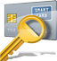
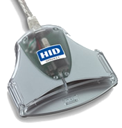
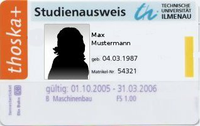

Smart Cards
Dieser Artikel wurde für die folgenden Ubuntu-Versionen getestet:
Ubuntu 14.04 Trusty Tahr
Zum Verständnis dieses Artikels sind folgende Seiten hilfreich:
 Dieser Artikel beschreibt die Verwendung von Smart Cards (auch Chipkarte oder Integrated Circuit Card genannt), die beispielsweise an Universitäten als universelle Studentenausweise genutzt werden. Ein Beispiel ist die Thoska+ in Thüringen, mit der man sich u.a. von zu Hause aus für Prüfungen anmelden oder Immatrikulationsbescheinigungen herunterladen kann. Hierfür erforderlich ist ein Kartenleser (Smart Card Reader), der für die Smart Card geeignet ist.
Kartenleser¶
Treiberinstallation¶
 Um eine Smart Card mithilfe eines Kartenlesers nutzen zu können, muss natürlich ein Treiber installiert sein. Welche Modelle durch welche Treiberpakete in den offiziellen Paketquellen unterstützt werden, kann man auf der Debianseite zu Smart Cards nachgucken. Welche Pakete benötigt werden, kann bei verschiedenen Kartenlesern unterschiedlich sein.
Viele Kartenleser benötigen die folgende Pakete[1]:
libusb-dev
libusb++-0.1-4c2
libccid
pcscd
libpcsclite1
libpcsclite-dev
 mit apturl
mit apturl
Paketliste zum Kopieren:
sudo apt-get install libusb-dev libusb++-0.1-4c2 libccid pcscd libpcsclite1 libpcsclite-dev
sudo aptitude install libusb-dev libusb++-0.1-4c2 libccid pcscd libpcsclite1 libpcsclite-dev
Kartenleser testen¶
Um zu testen, ob ein angeschlossener Kartenleser erkannt wird, kann folgender Befehl [2] verwendet werden:
lsusb
Hier sollte eine Zeile mit dem Kartenleser auftauchen. Das kann beispielsweise so aussehen (hier ein OmniKey 3021  ):
):
Bus 007 Device 002: ID 076b:3021 OmniKey AG CardMan 3121
Um sich noch detailliertere Informationen über den angeschlossenen Kartenleser zu beschaffen und darüber, ob die eingesteckte Karte erkannt wird, benötigt man folgende Pakete:
libpcsc-perl
pcsc-tools
mit apturl
Paketliste zum Kopieren:
sudo apt-get install libpcsc-perl pcsc-tools
sudo aptitude install libpcsc-perl pcsc-tools
Informationen liefert nun der folgende Befehl:
pcsc_scan
Bei Problemen siehe Problembehebung.
Konfiguration¶
Je nachdem, was für eine Smart Card und wozu diese verwendet werden soll, sind unterschiedliche Schritte zur Konfiguration nötig.
.NET Card¶

Will man eine .NET Card , z.B. eine Thoska+ (Thüringer HOchschul- und StudentenwerkKArte) nutzen, um sich auszuweisen und somit Zugriff auf geschützte Webseiten zu erhalten, benötigt man ein Kryptographiemodul, und der Browser muss entsprechend konfiguriert werden. Hier wird das Vorgehen am Beispiel von Firefox erklärt. Opera ist hierfür nicht geeignet, da sich keine Kryprographiemodule von Drittanbietern einbinden lassen.
Ein zur eigenen Systemarchitektur passendes Paket herunterladen und installieren [3]:
64-Bit: thoska+_amd64.deb

32-Bit: thoska+_amd32.deb
Alternativ: Studenten der TU Ilmenau können beide Pakete auch unter der Seite des Rechenzentrums finden.
Hinweis!
Fremdpakete können das System gefährden.
Anmerkung: Die Dateien, aus denen die Debianpakete gebaut sind, stammen von Gemalto  , dem Hersteller der .NET Cards.
, dem Hersteller der .NET Cards.
Hinweis:
Das Paket enthält folgende Bibliotheken (Treiber), die man eventuell auch woanders findet, falls der Link zu obigen Paketen nicht funktioniert:
libgtop11dotnet.la
libgtop11dotnet.so
libgtop11dotnet.so.0
libgtop11dotnet.so.0.0.0
pkcs11/libgtop11dotnet.so
In Firefox unter "Einstellungen -> Erweitert -> Verschlüsselung -> Kryptographie-Module -> Laden -> Modul-Dateiname" den Pfad /usr/lib/pkcs11/libgtop11dotnet.so eintragen und bestätigen
Firefox neustarten
Dann können entsprechende Seiten aufgerufen werden. Es erscheint dabei eine Aufforderung zur Passworteingabe (gemeint ist der Karten-PIN).
Thoska und Thoska+¶
Thoska ist ein Gemeinschaftsprojekt der Thüringer Hochschulen und des Thüringer Studentenwerks. Der Unterschied zwischen einer Thoska und einer Thoska+ besteht darin, dass die Thoska+ zusätzlich zum unsichtbaren kontaktlosen Chip einen sichtbaren Krypto-Chip enthält, der verschiedene Anwendungen möglich macht:
Authentifizierungsmittel gegenüber IT-Diensten
Signierung und Verschlüsselung von E-Mails und Dokumenten
Selbstbedienungsfunktionen über das Web, Rückmeldung
Sie kann also u.a. genutzt werden, um sich im Browser für Prüfungen an- und abzumelden, sich Immatrikulationsbescheinigungen auszudrucken und Noten einzusehen (TU Ilmenau: https://os.tu-ilmenau.de/). Mit einer einfachen Thoska (ohne goldenen Krypto-Chip) ist dies nicht möglich.
Problembehebung¶
Wird die Smart Card nicht erkannt, so hilft mitunter schon ein Neustart des Browsers. Grundsätzlich sollte der Browser neugestartet werden, wenn die Smart Card eingesteckt wird.
Probleme mit pcscd¶
Sollte pcsc_scan nicht funktionieren, schaue man in die Datei /var/log/syslog und überprüfe, ob dort vielleicht folgende Fehlermeldung auftaucht:
pcscd: readerfactory.c:...:RFInitializeReader() Open Port 0x200000 Failed (usb:04e6/5121:libudev:0:/dev/bus/usb/001/010) pcscd: readerfactory.c:...:RFAddReader() SCM SDI 010 [Vendor Interface] (......) init failed.
Hier kann es helfen, den pcscd-Daemon manuell zu starten, etwa mit kill all pcscd und sudo /usr/sbin/pcscd -f. Gibt man jetzt etwa in einem anderen Terminalfenster pcsc_scan ein und funktioniert es diesmal, kann die Ursache in fehlenden "udev-rules" liegen, d.h. Regeln beim Anstecken eines USB-Geräts. Fehlt die entsprechende Datei 92-libccid.rules im Verzeichnis /lib/udev/rules.d/, so kann man sie manuell nachinstallieren:
cp -p /lib/udev/rules.d/92-libccid.rules /etc/udev/rules.d/
Anschließend startet man pcscd wieder als Daemon und zieht den Kartenleser einmal ab und steckt ihn wieder an. Möglicherweise muss auch noch die "rules"-Datei für den entsprechenden Kartenleser angepasst werden.
Links¶
Authentifizierung OpenPGP SmartCard - veraltet
TU Ilmenau - UniRZ: Wie sieht die thoska+ aus?
Smartcard - kabelfernsehen.org: Die Smartcard
- Erstellt mit Inyoka
-
 2004 – 2017 ubuntuusers.de • Einige Rechte vorbehalten
2004 – 2017 ubuntuusers.de • Einige Rechte vorbehalten
Lizenz • Kontakt • Datenschutz • Impressum • Serverstatus -
Serverhousing gespendet von